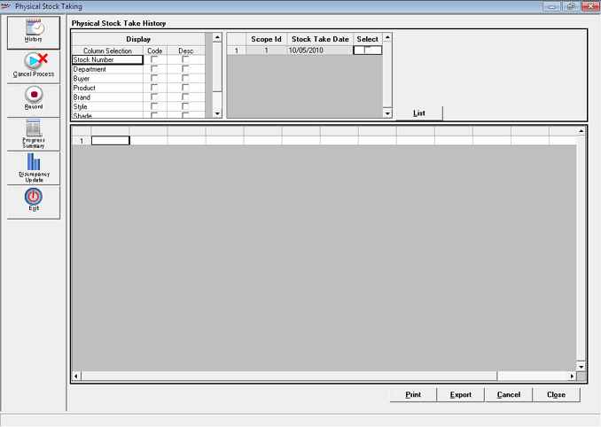
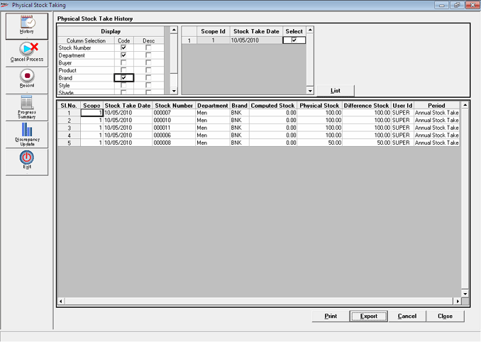

Use this option to generate a report displaying information of the previously conducted completed stock taking processes.

Display: Select to include additional columns to be displayed in the grid, based on the Code and/or Description. By default, the stock number is displayed.
Scope Id: Displays a unique Id allotted internally for each Stock Take.
Stock Take Date: Displays the date (Shoper date) on which Stock Take was done.
Select: Check to display the Stock Take details of a particular date. The grid displays the default columns and the columns selected at Show with details.
Following is a sample report showing the Physical Stock Taking History

The grid displays the Computed Stock, Physical Stock and Difference Stock of the items.
Print: Click to print the data. Select the destination to print the data from the Print Setup window.
Export: Click to export the data to Excel where the required analysis can be carried out. Once the data is successfully exported, a message is displayed. Click OK to proceed.